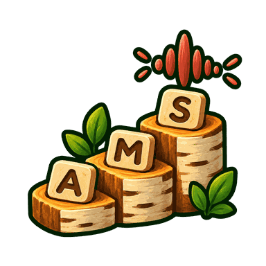

Ljodstigen
Frå éin bokstavlyd til heile ord — i ditt eige tempo.

Dette er ei tidleg utgåve. Alle fire modusane verkar. Figurane er enno enkle geometriske former, medan me prøver ut spelet med elevar.
Kven speler?
Same nettbrett kan brukast av fleire. Vel figuren din — han hugsar kor langt du er komen.
Spelar
Kva vil du spele?
Under arbeid
Banene til læraren
Kvar bokstav er eit tre. Di betre du kan han, di større veks det. Trea visnar aldri.
I Banelagar teiknar du eigne baner til Bokstavjakta. Spelet vel bokstavane tilpassa kvar elev, eller du kan skrive inn kva de skal øve på denne veka.